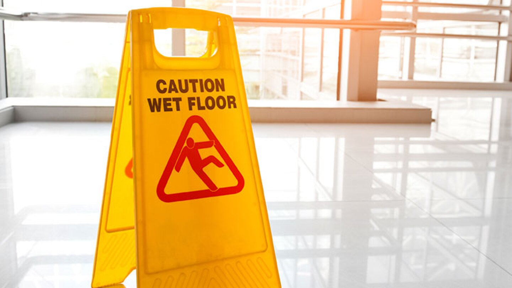
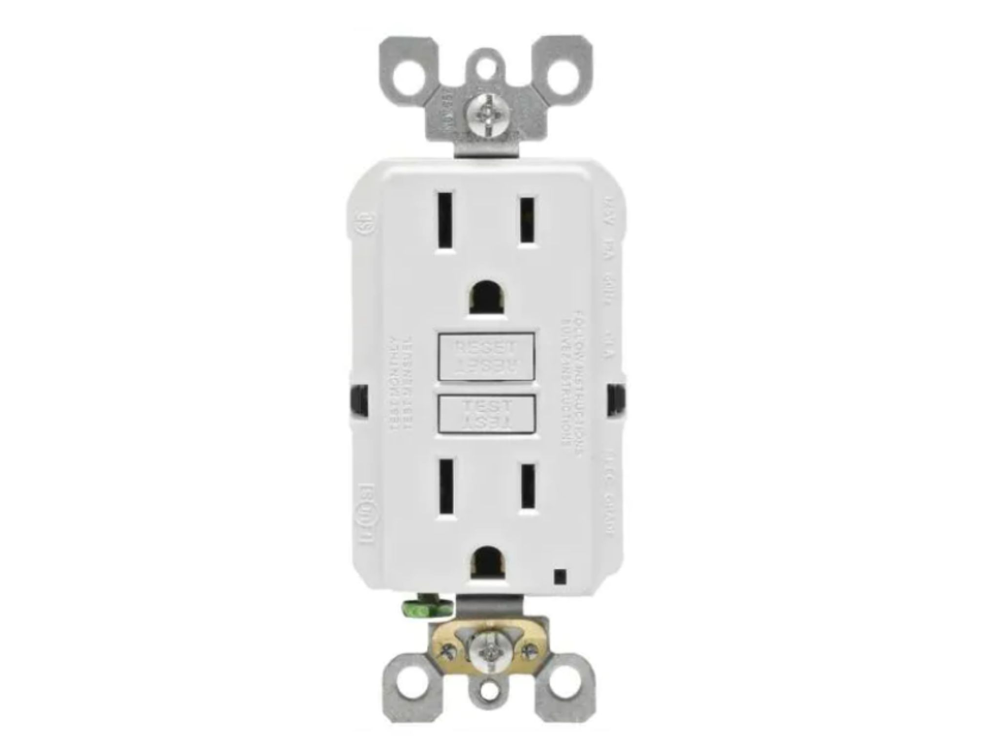
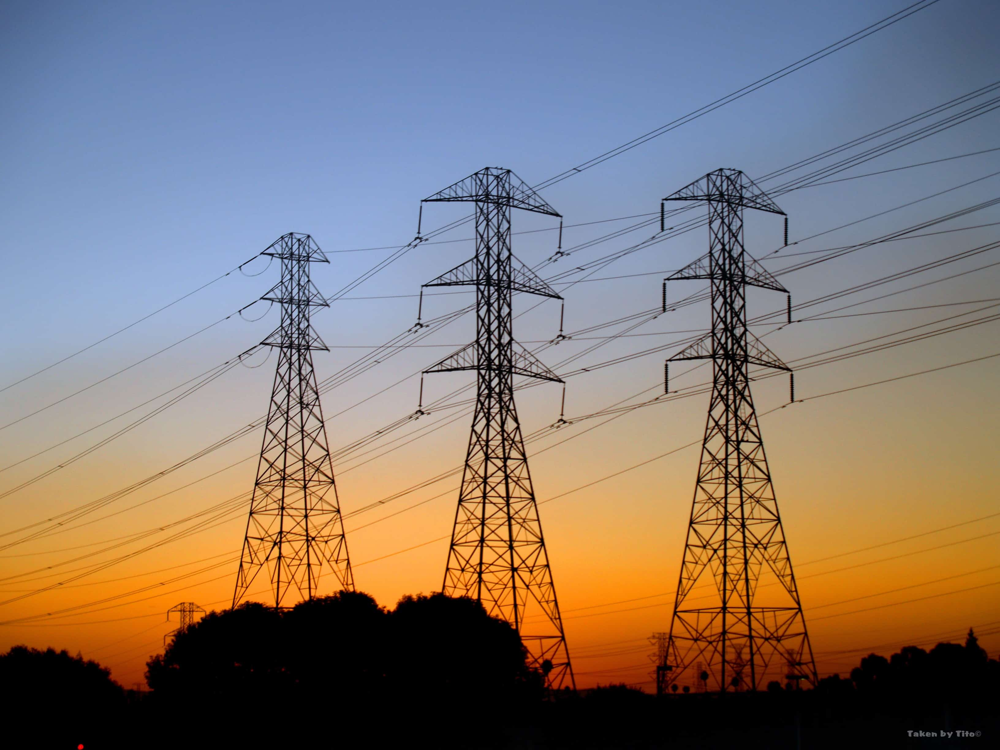
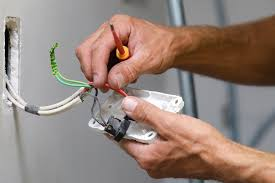

OSHA(Occupational Safety and Health Administration) Electrical Safety Standard 1926.431
This standard relates to equipment upkeep and maintenance. If employers don't inspect, repair, and upgrade their machinery, that can lead to failure and electrical injury or death. This specific standard refers to the construction industry, but the recommendations work well for all job sites. Some elements of standard 1926.431 include:
Explosion-Proofing
Employers must maintain equipment so that there is little to no risk of an explosion due to electrical malfunction.
Dust Proofing
Dust can get into machinery and cause various problems, both mechanical and electrical. Employers must protect all gear from dust-related incidents that could lead to an explosion or electrical arc.
General Maintenance and Upkeep
Employers and employees must monitor equipment and machinery to watch out for loose screws, gaskets, and other pieces that may interfere with dust and explosion prevention.
Reporting and Repair
If a worker spots any issues with machinery, they have to report to a supervisor immediately. Once a report is filed, the employer must stop using the circuit until the problem is fixed.
8 General Safety Tips for Working with Electrical Wires
Before your employees start working with or around electrical wires, they should be trained in proper safety techniques and precautions. Here are some generalized tips that can help prevent a disaster.
1. Make a Plan
The best way to avoid harm is to draft a project plan beforehand. During the planning phase, workers can assess the equipment and environment to spot any potential hazards.
2. Wear the Right Clothing and Gear

As we mentioned, OSHA requirements say that workers should have rubber gloves, insulating sleeves, and safety glasses on at all times. Fire-resistant clothing can also help prevent injury because the fibres are not very conductive or are treated with a flame-retardant.
3. Use the Buddy System

Should the worst happen, your workers shouldn't be by themselves on the job. A buddy system helps ensure that someone can always call for help if necessary or perform CPR. Both individuals should be trained in electrical safety and CPR before starting work.
4.Use the Lock Out Tag Out (LOTO) System

There are six steps to the LOTO system, and they can help ensure that all circuits are shut off and de-energized before working. De-energizing a circuit simply means making sure that there is no residual power left in the wires or machinery.
5. Avoid Working in Wet Areas
Since water is such a potent electrical conductor, it can pose significant safety risks on a job site. Even damp areas can be a problem, so workers must be able to address it. For example, if there is standing water on the ground, employees can either dry it off or cover it with non-conductive material (i.e., a wooden board).
6. Use a Ground Fault Circuit Interrupter (GFCI)
GFCIs are portable devices that workers can plug into an outlet or circuit. If there is a power surge because someone is getting electrocuted, the GFCI will detect it and kill the power automatically. Using these devices can act as a final failsafe just in case something else goes wrong.
7. Stay Away from Overhead Power Lines
OSHA recommends a minimum safe distance of 10 feet from any overhead electrical wires. Many injuries and accidents happen because of overhead lines, so workers should be hyper-aware of them.
8. Inspect Power Cords and Outlets for Damage
Finally, workers should check all electrical wires and elements, including plugs and outlets. Any damaged components should get replaced immediately. For example, if a three-pronged plug is missing the grounding prong, employees should swap it out with a new plug. They should look for signs of burning or charring, as that can indicate exposed wiring and potential electrical sparks.